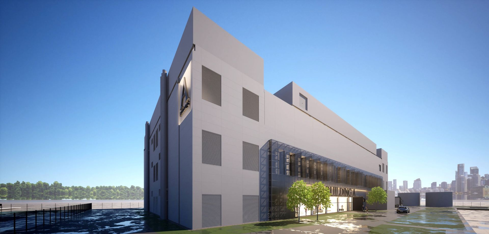

Komunikat z 21 października 2026
Kolejne pytania i odpowiedzi w sekcji Q&A
W sekcji Q&A opublikowaliśmy kolejne pytania lokalnej społeczności wraz z odpowiedziami.
Nowe odpowiedzi18 pytańnr 61–78

Zużycie wody, oddziaływanie akustyczne, przebieg procedury środowiskowej i harmonogram prac.
Centrum przetwarzania danych przy ulicy Energetycznej, realizowane w czterech etapach na terenie po dawnym kombinacie UNITRA-Polkolor.
Obiekt nie należy do przedsięwzięć wielkoskalowych, o jakich mówi się w dyskusji o centrach danych. Ani architektura, ani wielkość nie odbiegają od zabudowy usługowo-przemysłowej, która od dekad dominuje w tej części Piaseczna. Porównania do megaprojektów z innych kontynentów nie oddają rzeczywistego charakteru inwestycji, która w pełni podlega polskim i unijnym normom środowiskowym.
Inwestorem jest Sien Real, spółka z Grupy Budimex. Kampus powstaje jako inwestycja własna grupy. Za sposób prowadzenia budowy i standard obiektu odpowiada bezpośrednio inwestor.
Docelowo powstaną cztery budynki centrum przetwarzania danych wraz z infrastrukturą techniczną, energetyczną i drogową. W jej skład wejdą m.in. stacja transformatorowa, systemy awaryjnego zasilania oraz infrastruktura chłodzenia i transmisji danych. Na terenie trwają już prace prowadzone przez wykonawcę na podstawie zawartej umowy: przygotowanie terenu, ogrodzenie i monitoring, przyłącza sanitarne, tymczasowe zasilanie, drogi technologiczne, parkingi i zaplecze budowy.
W dawnym kombinacie UNITRA-Polkolor w produkcji kineskopów wykorzystywano ciężkie pierwiastki i substancje toksyczne. Dlatego miejscowy plan zagospodarowania przestrzennego przeznacza ten obszar pod funkcje usługowe i przemysłowe. Pozostała po kombinacie infrastruktura energetyczna pozwala korzystać z istniejących przyłączy, zamiast budować nowe linie przesyłowe przez tereny zabudowane.
Obowiązek przeprowadzenia pełnej oceny oddziaływania na środowisko nałożył Burmistrz Piaseczna. Formalny udział społeczeństwa zapewniono dwukrotnie, w kwietniu 2023 i styczniu 2024 roku, a obwieszczenia publikowano w Biuletynie Informacji Publicznej, w urzędzie, w miejscu inwestycji i w prasie lokalnej. Decyzja środowiskowa została wydana 12 kwietnia 2024 roku, przy udziale trzech instytucji opiniujących. Po rozpoczęciu prac na terenie mieszkańcy najbliższych posesji otrzymali zawiadomienia listowne.
Zarówno na etapie budowy, jak i eksploatacji stosowane są rozwiązania zgodne z wymaganiami międzynarodowych certyfikacji środowiskowych BREEAM oraz LEED. Nakładają one obowiązki wykraczające poza przepisy krajowe: dotyczą gospodarowania zasobami, ograniczania uciążliwości dla sąsiedztwa i ochrony jakości życia mieszkańców. Sposób prowadzenia budowy i eksploatacji podlega audytowi zewnętrznemu.
We wszelkich sprawach dotyczących powstania centrum inwestor pozostaje w kontakcie z Burmistrzem, Sołtysem oraz organami administracyjnymi gminy, tak by na bieżąco odpowiadać na pytania lokalnej społeczności. Otoczenie inwestycji ma charakter przemysłowo-usługowy.
Nie podajemy dziś informacji o docelowym użytkowniku i operatorze obiektu, ponieważ wiążą nas ustalenia z partnerem biznesowym. Z tego samego powodu nie podajemy mocy IT ani łącznej powierzchni technicznej.
Karta inwestycji
Od decyzji środowiskowej, przez rozpoczęte prace na terenie, aż po docelową budowę kampusu czterech budynków.
Decyzja o środowiskowych uwarunkowaniach po pełnej ocenie oddziaływania na środowisko, z udziałem RDOŚ, Wód Polskich i inspekcji sanitarnej.
Zawarcie umowy na realizację prac na terenie inwestycji przy ul. Energetycznej.
Wykonawca rozpoczął prace: przygotowanie terenu, ogrodzenie i monitoring, przyłącza, zasilanie tymczasowe, drogi i zaplecze.
Docelowo cztery budynki centrum danych wraz z infrastrukturą techniczną, energetyczną i drogową.
Poglądowe wizualizacje architektoniczne przedstawiają charakter i skalę pierwszego budynku kampusu.
Poniżej najczęściej powtarzane twierdzenia o inwestycji i dane, które je weryfikują.
Drzewa na terenie inwestycji wycięto bez nadzoru przyrodniczego.Czy zanim weszły maszyny, ktoś sprawdził, co rośnie i żyje na tej działce?
Prace poprzedziła kontrola przyrodnicza, a jej ustalenia aktualizowano na kolejnych etapach przygotowania terenu.Obowiązek takiej kontroli wynika z warunku 1.1 decyzji o środowiskowych uwarunkowaniach. Ma ona zostać wykonana bezpośrednio przed rozpoczęciem prac, dlatego przyrodnicy wracali na teren przed karczowaniem i zdjęciem warstwy humusu. Zakres obejmował ptaki, nietoperze, płazy, gady i ssaki, a także roślinność oraz bezkręgowce. Prace przy ogrodzeniu, prowadzone w sąsiedztwie czynnego gniazda, odbywały się pod nadzorem ornitologicznym.
Na terenie przeznaczonym do karczowania i zdjęcia warstwy humusu nie stwierdzono chronionych roślin, grzybów, bezkręgowców, płazów, gadów ani ssaków. Nie znaleziono również ich siedlisk, które kolidowałyby z zakresem robót.
Wcześniejsza kontrola wykazała trzy gniazda, w tym jedno czynne gniazdo grzywacza. Wyznaczono wokół niego strefę ochronną, a prace przy ogrodzeniu prowadzono pod nadzorem ornitologicznym. Podczas kolejnej kontroli gniazdo było już opuszczone i uszkodzone przez niekorzystne warunki atmosferyczne. Nowych gniazd nie stwierdzono.
Przegląd przyrodniczy terenu inwestycji, czyli kontrola przed rozpoczęciem prac, obejmująca ptaki, nietoperze, płazy, gady i ssaki wraz z oceną roślinności oraz bezkręgowców.
Notatka z nadzoru ornitologicznego nad pracami przy ogrodzeniu, prowadzonymi w sąsiedztwie czynnego gniazda grzywacza.
Notatka z kontroli bezpośrednio przed karczowaniem i zdjęciem warstwy humusu, aktualizująca wcześniejsze ustalenia.
Notatka z kontroli zabezpieczenia drzew przeznaczonych do zachowania oraz stanu gniazda grzywacza.
Cała długość paska to 286 m³ na dobę, czyli maksimum ustalone dla całej, czteroetapowej inwestycji, potrzebne jednorazowo do napełnienia zbiorników przeciwpożarowych. Zbiorniki zostaną napełnione dopiero po zakończeniu budowy kolejnych etapów inwestycji. Wypełnienie pokazuje maksymalne zapotrzebowanie w normalnej pracy obiektu według aktualnego projektu.
Centrum danych zużyje ogromne ilości wody i zabraknie jej mieszkańcom.Czy chłodzenie serwerowni pochłania wodę bez ograniczeń?
Aktualny projekt zakłada zapotrzebowanie maksymalnie do 55 m³ na dobę, czyli około pięć razy mniej niż wartość z warunków przyłączenia.Woda służy przede wszystkim celom socjalno-bytowym pracowników obsługujących obiekt, celom porządkowym oraz sezonowemu nawilżaniu powietrza. Chłodzenie serwerów pracuje w obiegu zamkniętym, bez stałego poboru wody. Zdecydowana większość pobranej wody wraca po wykorzystaniu do instalacji, a bezpowrotnie zużywana jest jej niewielka część.
286 m³ wody na dobę to tyle, co osiedle na kilka tysięcy mieszkańców.Czy 286 m³ to prognoza codziennego zużycia?
To jednorazowe napełnienie zbiorników przeciwpożarowych, a nie codzienne zużycie.286 m³/dobę to maksymalne zapotrzebowanie wynikające z warunków przyłączenia obowiązujących dla działki w chwili jej nabycia, ustalone dla całej, czteroetapowej inwestycji. Wynika ono z wymaganego przepisami jednorazowego napełnienia zbiorników przeciwpożarowych, które nastąpi dopiero po zakończeniu budowy kolejnych etapów inwestycji, i nie jest prognozą codziennego zużycia.
Przez centrum danych w Józefosławiu jeszcze bardziej spadnie ciśnienie wody.Czy inwestycja pogłębi dzisiejsze spadki ciśnienia w sieci?
Spadki ciśnienia w szczycie to realny problem, istniejący niezależnie od tej inwestycji.Nie podważamy go. Rzeczywiste zużycie obiektu nie równa się jednak górnej wartości zapisanej w warunkach przyłączenia. Przedstawiciele PWiK w Piasecznie publicznie potwierdzali, że inwestycja nie wpłynie niekorzystnie na gospodarkę wodną okolicznych terenów.
To będzie hałaśliwy gigant, jak amerykańskie kampusy centrów danych.Czy to obiekt tej samej skali, co kompleksy zza oceanu?
Skala i charakter obiektu są inne niż w projektach znanych z rynku amerykańskiego.Inwestycja powstaje w otoczeniu zabudowy usługowo-przemysłowej i podlega polskim oraz unijnym normom środowiskowym, w tym dopuszczalnym poziomom hałasu. Kampusy, do których odwołują się doniesienia zza oceanu, mają inną skalę i powstają w innym reżimie prawnym.
W nocy będzie głośno od pracujących urządzeń.Czy instalacje chłodnicze pracują tak samo głośno po zmroku?
W nocy urządzenia chłodnicze pracują ze zmniejszoną wydajnością, co wynika z decyzji środowiskowej.Na granicy działki spełnione będą wszystkie obowiązujące normy hałasu, a dodatkowo zastosowane zostaną ekrany akustyczne i żaluzje. Analizy akustyczne uwzględniają funkcję sąsiedniej zabudowy, porę doby oraz liczbę i parametry urządzeń, a wartości zapisane w decyzji środowiskowej są wartościami maksymalnymi. Poziom hałasu ma być porównywalny z tym, który wiąże się z funkcjonowaniem pobliskiego centrum handlowego. Otoczenie inwestycji ma już dziś charakter przemysłowo-usługowy i sąsiaduje z rozdzielnią energetyczną przy ul. Energetycznej. Nowy obiekt nie wprowadzi więc do tej przestrzeni obcej dotąd jakości akustycznej. Założenia dotyczące hałasu będą weryfikowane pomiarami zgodnie z wymaganiami certyfikacji BREEAM i LEED, a o wynikach uzyskanych certyfikacji inwestor poinformuje opinię publiczną.
Zmiana z trzech na cztery kondygnacje oznacza wyższy, głośniejszy budynek.Czy zmiana liczby kondygnacji oznacza większy budynek?
Wysokość budynku się nie zmienia.Zmiana dotyczy wyłącznie podziału wnętrza budynku na kondygnacje, nie jego finalnej wysokości, i nie ma wpływu na oddziaływanie akustyczne. Obowiązek dotrzymania norm na granicy działki obowiązuje niezależnie od ostatecznych parametrów budynków, a wysokość urządzeń na dachach mieści się w wysokości zabudowy dopuszczonej planem miejscowym.
Ta inwestycja powstaje bez nadzoru i w tajemnicy przed mieszkańcami.Dlaczego wielu mieszkańców dowiedziało się o budowie dopiero wtedy, gdy stanęło ogrodzenie?
Postępowanie środowiskowe prowadzono jawnie, z udziałem trzech instytucji.Obowiązek pełnej oceny oddziaływania na środowisko nałożył Burmistrz Piaseczna. Formalny udział społeczeństwa zapewniono dwukrotnie, w kwietniu 2023 i styczniu 2024 r., a obwieszczenia publikowano w BIP, w urzędzie, na terenie inwestycji i w prasie lokalnej. Decyzję środowiskową wydano 12 kwietnia 2024 r., z udziałem RDOŚ, Wód Polskich i Państwowej Inspekcji Sanitarnej. Inwestor przyznaje jednocześnie, że sama procedura nie zastąpiła rozmowy z sąsiadami.
„Standard środowiskowy” to tylko marketingowe hasło.Czy deklaracje o standardzie środowiskowym mają realne pokrycie?
Budowa i eksploatacja podlegają zewnętrznemu audytowi certyfikacji BREEAM i LEED.To międzynarodowe standardy, które nakładają obowiązki wykraczające poza przepisy krajowe: dotyczą gospodarowania zasobami, ograniczania uciążliwości dla sąsiedztwa i ochrony jakości życia mieszkańców. Ocenia je podmiot zewnętrzny, a nie sam inwestor.
Ta budowa zniszczy charakter okolicy i obniży wartość naszych domów.Czy taki obiekt pasuje do tego sąsiedztwa?
Inwestycja nie zmienia charakteru okolicy, tylko wpisuje się w jej przeznaczenie.Ze względu na przemysłową historię miejsca plan miejscowy od kilkudziesięciu lat przeznacza ten teren pod funkcje usługowe i przemysłowe, a sąsiedztwo tworzy zabudowa przemysłowa, handlowa i biurowa. Cała okolica leży również w obszarze oddziaływania akustycznego Lotniska Chopina.
Budowa i eksploatacja oznaczają stały ruch ciężarówek i utrudnienia.Czy przez okolicę pojadą kolumny ciężarówek?
Docelowy ruch to głównie samochody osobowe pracowników.Ruch drogowy w okolicy nie wzrośnie istotnie w stosunku do dzisiejszego. Na etapie budowy wymogi certyfikacji BREEAM i LEED zobowiązują inwestora do ograniczania oddziaływania prac na otoczenie. Godziny prac hałaśliwych i organizacja ruchu budowlanego są planowane i uzgadniane z gminą, a mieszkańcy informowani o nich z wyprzedzeniem.
Centrum danych „zabiera” prąd mieszkańcom.Czy w okolicy wystarczy prądu?
Obiekt ma dedykowaną infrastrukturę zasilania.Projekt przewiduje własną stację transformatorową oraz systemy awaryjnego zasilania, wpięte w sieć zgodnie z warunkami przyłączeniowymi. Budowa stacji energetycznej WN/SN jest objęta decyzją środowiskową i pozwoleniem na budowę. Dzięki infrastrukturze pozostałej po dawnym kombinacie obiekt korzysta z istniejących przyłączy, zamiast wymuszać budowę nowych linii przesyłowych przez tereny zabudowane.
To „puste” budynki bez miejsc pracy.Czy centrum danych obsługuje się samo?
To praca dla wykonawców, dostawców i obsługi obiektu.Na etapie budowy pracują przy inwestycji wykonawcy i poddostawcy, a eksploatacja obiektu wymaga kadry technicznej i inżynierskiej, utrzymania ruchu oraz ochrony. Polskie Stowarzyszenie Centrów Danych (PLDCA) zrzesza ponad 60 firm z całej branży, a według jego danych sektor wygenerował w Polsce w 2025 r. 10,6 mld zł wartości dodanej i 4,3 mld zł wpływów fiskalnych.
Polska jest już „zalana” centrami danych.Czy centra danych powstają w Polsce masowo?
To wciąż rynek na dorobku.Według PLDCA Polska dysponuje ok. 200 MW mocy centrów danych, podczas gdy cała Europa to już ok. 10 GW. Około 80% polskich obiektów skupionych jest w rejonie Warszawy.
Dane o inwestycji: komunikat prasowy i materiały inwestora (Sien Real) dotyczące gospodarki wodnej, akustyki i procedury środowiskowej. Dane sektorowe: Polskie Stowarzyszenie Centrów Danych (PLDCA, pldca.pl) oraz raport Komisji Europejskiej „Assessment of the Energy Performance and Sustainability of Data Centres in the EU”.
Przyjmujemy je wobec lokalnej społeczności na cały okres budowy i eksploatacji obiektu.
Po uruchomieniu co kwartał opublikujemy na stronie www.sienreal.pl dane o rzeczywistym poborze wody przez obiekt, w ujęciu dobowym i miesięcznym.
Zgodnie z założeniami certyfikacji BREEAM i LEED założenia dotyczące hałasu będą weryfikowane pomiarami. O wynikach uzyskanych certyfikacji inwestor będzie informował opinię publiczną.
Od dziś działa strona www.sienreal.pl oraz adres pytania@sienreal.pl. Na każde zgłoszenie odpowiemy w ciągu 3 dni roboczych, a powtarzające się pytania będziemy publikować na ww. stronie.
Godziny prac hałaśliwych oraz organizację ruchu budowlanego będziemy odpowiednio planować i uzgadniać z gminą, informując o nich mieszkańców z wyprzedzeniem.
Co kwartał przekażemy Radzie Miejskiej w Piasecznie oraz sołectwom Józefosławia i Julianowa informację o postępie prac, kolejnych etapach i parametrach eksploatacyjnych obiektu.
Zapraszamy mieszkańców do powołania lokalnego zespołu dialogu, z którym będziemy spotykać się regularnie przez cały okres budowy i eksploatacji.
Odpowiedzi na pytania dotyczące inwestycji pogrupowaliśmy w kategorie tematyczne. Po rozwinięciu kategorii wyświetlą się należące do niej pytania.
Docelowo kampus czterech budynków centrum przetwarzania danych wraz z infrastrukturą techniczną, energetyczną i drogową, w tym stacją transformatorową oraz systemami awaryjnego zasilania. Inwestycja realizowana jest w czterech etapach.
Inwestorem jest Sien Real Sp. z o.o. Za sposób prowadzenia budowy i standard obiektu odpowiada bezpośrednio inwestor, niezależnie od tego, kto będzie docelowym operatorem obiektu.
Na terenie trwają prace prowadzone przez wykonawcę na podstawie zawartej umowy: przygotowanie terenu, ogrodzenie i system monitoringu, przyłącza sanitarne, tymczasowe zasilanie energetyczne, drogi technologiczne, parkingi oraz zaplecze budowy. Zakres prac jest sukcesywnie rozszerzany o kolejne elementy inwestycji.
Tak. Otwarte spotkanie z mieszkańcami Józefosławia, Julianowa i Piaseczna odbyło się 29 września 2026 roku w Szkole Podstawowej im. Janusza Korczaka w Józefosławiu. Wzięli w nim udział przedstawiciele inwestora, zespół projektowy i eksperci. Prezentację przedstawioną podczas spotkania można pobrać w formacie PDF. Odpowiedzi na przesłane pytania przekażemy również w formie pisemnej.
Na obecnym etapie inwestor nie może ujawnić informacji o docelowym użytkowniku i operatorze obiektu ani o mocy IT i łącznej powierzchni technicznej, ponieważ wiążą go ustalenia z partnerem biznesowym.
Treści oparte są na komunikacie prasowym i materiałach inwestycyjnych dotyczących centrum danych przy ul. Energetycznej w Piasecznie, publikowanych przez inwestora, Sien Real Sp. z o.o. Aktualne informacje o projekcie dostępne są na stronie sienreal.pl.
Tak. Analiza akustyczna została wykonana dla najbardziej wymagającego wariantu pracy obiektu. Przyjęto jednoczesną pracę wszystkich czterech budynków centrum danych przy pełnym projektowym obciążeniu infrastruktury technicznej, w tym systemów chłodzenia. Oznacza to scenariusz znacznie bardziej wymagający niż typowe warunki eksploatacji. Dzięki takiemu podejściu możliwe było sprawdzenie, czy nawet w najbardziej niekorzystnych warunkach inwestycja spełnia obowiązujące normy hałasu.
Tak. Model akustyczny uwzględnia jednoczesną pracę wszystkich projektowanych źródeł hałasu związanych z funkcjonowaniem centrum danych. Analizę wykonano dla wariantu maksymalnego obciążenia wszystkich czterech budynków, co pozwoliło ocenić również skumulowany wpływ urządzeń pracujących równocześnie. Jest to podejście bardziej rygorystyczne niż analiza oparta na przeciętnych warunkach eksploatacji.
Analiza akustyczna została wykonana zgodnie z obowiązującymi przepisami oraz metodyką stosowaną przy ocenie tego typu inwestycji. W modelu wykorzystano dostępne parametry akustyczne urządzeń. Ocena została wykonana zgodnie z wymaganiami obowiązujących norm i procedur środowiskowych. W przypadku urządzeń stosowanych w centrach danych producenci nie udostępniają wszystkich danych pozwalających na odrębne modelowanie wszystkich rodzajów dźwięku, takich jak hałas tonalny czy niskoczęstotliwościowy. Co istotne, urządzenia wykorzystywane zarówno w tej inwestycji, jak i w innych centrach danych działających w Polsce, co do zasady nie posiadają w dokumentacji technicznej parametrów umożliwiających przeprowadzenie szczegółowych symulacji dla każdego rodzaju hałasu oddzielnie. Nie jest to też wymagane przez polskie prawo. Wyniki analiz potwierdziły dotrzymanie obowiązujących norm środowiskowych.
Ocena oddziaływania akustycznego została przeprowadzona zgodnie z obowiązującą metodyką stosowaną dla tego rodzaju inwestycji. Prognozowane poziomy hałasu zostały odniesione do obowiązujących dopuszczalnych poziomów hałasu w środowisku. Szczegółowe wyniki analiz zostały przedstawione w raporcie o oddziaływaniu przedsięwzięcia na środowisko, który stanowił podstawę wydania decyzji środowiskowej.
Po uruchomieniu centrum danych zakres pomiarów środowiskowych będzie realizowany zgodnie z obowiązującymi przepisami prawa oraz wymaganiami wynikającymi z decyzji administracyjnych i pozwoleń dotyczących eksploatacji obiektu. Ich pełny zakres będzie dostępny po uruchomieniu serwerowni. Inwestor będzie realizował wszystkie wymagane prawem pomiary i kontrole środowiskowe. Jednocześnie już na etapie projektowania przyjęto najbardziej wymagające scenariusze pracy obiektu, tak aby zapewnić zachowanie obowiązujących norm również w warunkach maksymalnego obciążenia.
Po uruchomieniu centrum danych wszystkie wymagane prawem pomiary środowiskowe będą realizowane zgodnie z obowiązującymi przepisami, decyzjami administracyjnymi oraz warunkami określonymi przez właściwe organy. Jeżeli przepisy, decyzje administracyjne lub warunki eksploatacji będą wymagały wykonania pomiarów powykonawczych, inwestor będzie realizował takie obowiązki. Niezależnie od tego warto podkreślić, że już na etapie projektowania inwestycja została zweryfikowana dla najbardziej wymagających scenariuszy pracy, a zastosowane rozwiązania techniczne mają na celu zapewnienie dotrzymania norm hałasu również po uruchomieniu obiektu. Inwestor pozostaje również otwarty na dialog z mieszkańcami oraz analizę dodatkowych działań monitoringowych, jeżeli okażą się one zasadne i będą wynikały z obowiązujących wymagań lub uzgodnień z właściwymi organami.
Tak. Praca wentylatorów będzie automatycznie dostosowywana do aktualnego obciążenia obiektu oraz warunków pogodowych. Niezależnie od pory dnia czy warunków pogodowych oddziaływanie akustyczne nie będzie przekraczało dopuszczalnych norm.
Od początku projektowania obiektu jednym z priorytetów było ograniczenie wpływu inwestycji na otoczenie. W tym celu część urządzeń technicznych została umieszczona wewnątrz budynków technicznych i maszynowni, zamiast na otwartych przestrzeniach. Zaprojektowano również osłony akustyczne, których zadaniem jest ograniczenie rozprzestrzeniania się dźwięku. Dodatkowo zmniejszono liczbę urządzeń lokalizowanych na dachach budynków. Między innymi osiem chillerów zostało przeniesionych do wnętrza budynku, co znacząco ogranicza emisję dźwięku do otoczenia. Ponadto przy północnej i południowej krawędzi działki zastosowano dry coolery, które będą uruchamiane wyłącznie w sytuacjach awaryjnych, a nie podczas standardowej eksploatacji obiektu. Zamienny projekt budowlany przewiduje również dodatkowe osłony akustyczne od strony południowej, które nie były wymagane przez decyzję środowiskową. Zostały one zastosowane dobrowolnie w celu dalszego ograniczenia potencjalnego oddziaływania inwestycji na otoczenie.
Wszystkie te rozwiązania zostały uwzględnione w analizach środowiskowych. Inwestor pracuje również nad analizą dodatkowych rozwiązań ograniczających poziom hałasu. O ewentualnych dodatkowych usprawnieniach będziemy informować na naszej stronie www.
Tak. Analiza akustyczna została przeprowadzona zgodnie z obowiązującymi przepisami i uwzględniała wpływ odbić dźwięku od pobliskich budynków, ekranów oraz innych obiektów znajdujących się w otoczeniu inwestycji zgodnie z metodyką stosowaną w postępowaniach środowiskowych. Wpływ tych elementów został uwzględniony w końcowym modelu akustycznym, który był podstawą oceny zgodności inwestycji z obowiązującymi normami hałasu.
Nie. System chłodzenia został zaprojektowany jako kompletne rozwiązanie przeznaczone dla docelowego funkcjonowania każdego budynku. Nie przewiduje się późniejszej rozbudowy systemu ponad parametry uwzględnione w projekcie i przeprowadzonych analizach środowiskowych.
Tak. Dokumentacja projektowa uwzględnia zarówno standardowe, jak i awaryjne scenariusze pracy systemów chłodzenia. System został zaprojektowany z odpowiednią rezerwą techniczną. Oznacza to, że część urządzeń pozostaje w gotowości i może przejąć pracę w przypadku awarii innego elementu instalacji. Dzięki temu bez zwiększania oddziaływania na otoczenie możliwe jest utrzymanie ciągłości działania centrum danych.
W części instalacji chłodniczej zastosowano glikol etylenowy. Rozwiązanie to zostało wybrane ze względu na bardzo dobre właściwości eksploatacyjne, wysoką efektywność pracy oraz możliwość bezpiecznego działania w szerokim zakresie temperatur. System został wyposażony w zabezpieczenia środowiskowe, a projekt przewiduje również wykonanie zbiornika awaryjnego umożliwiającego bezpieczne przechwycenie medium w przypadku wystąpienia awarii. Dzięki temu ryzyko wpływu na środowisko zostało ograniczone do minimum.
Centrum danych będzie wykorzystywało system chłodzenia powietrznego oparty na technologii dry coolerów. Oznacza to, że proces chłodzenia infrastruktury IT nie wymaga wykorzystania wody. Rozwiązanie to zostało wybrane między innymi ze względu na ograniczenie zużycia zasobów wodnych oraz zmniejszenie wpływu inwestycji na lokalną gospodarkę wodną. W przeciwieństwie do wielu innych technologii chłodzenia nie wymaga ono stałego poboru wody do odprowadzania ciepła z serwerowni.
W instalacji zastosowany zostanie glikol etylenowy. Został on wybrany ze względu na bardzo dobre właściwości termodynamiczne, które pozwalają efektywnie transportować energię cieplną i zapewniają wysoką sprawność pracy systemu chłodzenia. Rozwiązanie to jest powszechnie stosowane w nowoczesnych instalacjach technicznych, w tym w centrach danych. System został wyposażony w odpowiednie zabezpieczenia środowiskowe, a projekt przewiduje również rozwiązania umożliwiające bezpieczne przechwycenie medium w przypadku ewentualnej awarii. Dzięki temu ryzyko wpływu na środowisko zostało ograniczone do minimum.
Jedynie skraplacze i wybrane urządzenia związane z odprowadzaniem ciepła będą zlokalizowane na dachach budynków. Pozostałe elementy instalacji chłodniczej i wentylacyjnej zostały zaprojektowane wewnątrz budynków, w dedykowanych maszynowniach technicznych. Takie rozwiązanie pozwala dodatkowo ograniczyć rozprzestrzenianie się hałasu poza teren inwestycji i było jednym z elementów branych pod uwagę podczas analiz środowiskowych.
Agregaty prądotwórcze będą poddawane testom technicznym zgodnie z wymaganiami producentów oraz procedurami bezpieczeństwa. Testy te nie będą jednak odbywały się zarówno w nocy, jak i dni świąteczne. Testy mają charakter okresowy i trwają maksymalnie do jednej godziny. Nie oznaczają jednoczesnej pracy wszystkich agregatów przez dłuższy czas. Agregaty zostały zlokalizowane wewnątrz budynków technicznych.
Każdy zbiornik paliwa został zaprojektowany jako zbiornik dwupłaszczowy, co oznacza zastosowanie dwóch niezależnych warstw zabezpieczenia. Pomiędzy płaszczami działa system ciągłego monitorowania szczelności. W przypadku wykrycia nawet niewielkiego wycieku automatycznie uruchamiany jest alarm. O zdarzeniu niezwłocznie informowany jest personel odpowiedzialny za eksploatację obiektu, który podejmuje działania zgodnie z obowiązującymi procedurami bezpieczeństwa. Zastosowane rozwiązania należą do najwyższych standardów zabezpieczeń stosowanych w tego rodzaju obiektach.
Tak. Instalacje paliwowe będą objęte systemem monitorowania szczelności oraz wykrywania wycieków. W przypadku wykrycia nieprawidłowości uruchamiane są procedury bezpieczeństwa obejmujące identyfikację źródła zdarzenia, zabezpieczenie instalacji oraz działania naprawcze.
Szczegółowe zestawienie szacowanych wielkości emisji zostało przedstawione w raporcie o oddziaływaniu przedsięwzięcia na środowisko przygotowanym dla inwestycji. Analizy te były jednym z podstawowych elementów procedury środowiskowej i potwierdziły możliwość funkcjonowania inwestycji przy zachowaniu obowiązujących norm jakości powietrza.
Inwestor będzie uzyskiwał wszystkie wymagane prawem decyzje, pozwolenia i zgłoszenia środowiskowe właściwe dla poszczególnych etapów realizacji oraz eksploatacji inwestycji. Oznacza to, że funkcjonowanie centrum danych będzie podlegało bieżącemu nadzorowi wynikającemu z obowiązujących przepisów oraz warunków określonych przez właściwe organy administracyjne.
Tak. Wpływ emisji z agregatów prądotwórczych został przeanalizowany w ramach oceny oddziaływania przedsięwzięcia na środowisko. Analizy zostały przeprowadzone zgodnie z obowiązującymi przepisami i obejmowały cały obszar oddziaływania inwestycji określony zgodnie z metodyką stosowaną w postępowaniach środowiskowych. Wyniki tych analiz potwierdziły spełnienie obowiązujących wymagań dotyczących jakości powietrza.
W przypadku zaniku zasilania agregaty prądotwórcze uruchamiają się automatycznie i zapewniają ciągłość działania centrum danych do czasu przywrócenia dostaw energii z sieci. Długotrwałe awarie sieci elektroenergetycznej należą do sytuacji wyjątkowych i występują bardzo rzadko. Centrum danych jest projektowane właśnie po to, aby zapewnić ciągłość działania również w takich sytuacjach.
Generatory prądotwórcze zostały zaprojektowane wewnątrz budynków technicznych. Jest to jedno z rozwiązań przyjętych w celu ograniczenia potencjalnego oddziaływania inwestycji na otoczenie, w szczególności w zakresie emisji hałasu. W porównaniu do rozwiązań opartych na urządzeniach zewnętrznych, lokalizacja agregatów wewnątrz budynku zapewnia dodatkową izolację akustyczną i ogranicza rozprzestrzenianie się dźwięku poza teren inwestycji. Wyniki tych analiz potwierdziły możliwość funkcjonowania obiektu przy zachowaniu obowiązujących norm środowiskowych i akustycznych.
Paliwo będzie magazynowane w podziemnych zbiornikach zlokalizowanych w południowej części działki. Zbiorniki zostały wyposażone w wielopoziomowe systemy zabezpieczeń, w tym monitoring szczelności oraz system wykrywania wycieków. Rozwiązania te należą do najwyższych standardów bezpieczeństwa stosowanych w tego typu obiektach.
Różnice pomiędzy wartościami pojawiającymi się w dokumentacji wynikają z uwzględniania różnych scenariuszy wykorzystania wody. Najwyższe wartości dotyczą sytuacji związanych z ochroną przeciwpożarową, w szczególności możliwością napełniania lub uzupełniania zbiorników przeciwpożarowych po ewentualnej akcji gaśniczej. W codziennej eksploatacji centrum danych zapotrzebowanie na wodę jest wielokrotnie niższe. Wynika ono głównie z potrzeb pracowników oraz systemu nawilżania powietrza w części biurowej.
Wartość 286 m³ na dobę odpowiada maksymalnemu zapotrzebowaniu uzgodnionemu w warunkach przyłączenia dla całej inwestycji, obejmującej wszystkie cztery etapy. Wynika przede wszystkim z konieczności jednorazowego napełnienia zbiorników przeciwpożarowych, zgodnie z wymaganymi przepisami, co nastąpi dopiero po zakończeniu budowy kolejnych etapów inwestycji. Nie jest to prognoza codziennego zużycia. Rzeczywiste, maksymalne zapotrzebowanie na wodę w normalnej eksploatacji, nawet przy pełnym wykorzystaniu wszystkich czterech budynków, to około 55 metrów sześciennych na dobę, czyli ponad pięć razy mniej niż wartość zawarta w warunkach przyłączenia.
Podane wartości uwzględniają wszystkie potrzeby związane z funkcjonowaniem obiektu, w tym cele socjalno-bytowe, oraz wymagania związane z ochroną przeciwpożarową.
Wartość 286 m³ na dobę odpowiada maksymalnemu zapotrzebowaniu uzgodnionemu w warunkach przyłączenia dla całej inwestycji, obejmującej wszystkie cztery etapy. Wynika przede wszystkim z konieczności jednorazowego napełnienia zbiorników przeciwpożarowych, zgodnie z wymaganymi przepisami, co nastąpi dopiero po zakończeniu budowy kolejnych etapów inwestycji. Nie jest to prognoza codziennego zużycia. Rzeczywiste, maksymalne zapotrzebowanie na wodę w normalnej eksploatacji, nawet przy pełnym wykorzystaniu wszystkich czterech budynków, to około 55 metrów sześciennych na dobę, czyli ponad pięć razy mniej niż wartość zawarta w warunkach przyłączenia.
Nie. Centrum danych będzie wykorzystywało system chłodzenia powietrznego oparty na technologii dry coolerów. Oznacza to, że proces chłodzenia serwerowni nie wymaga poboru wody. Jest to rozwiązanie ograniczające zużycie zasobów wodnych oraz wpływ inwestycji na lokalną gospodarkę wodną.
System chłodzenia nie wykorzystuje wody do bieżącej pracy, dlatego wysokie temperatury zewnętrzne nie powodują dodatkowego zapotrzebowania na wodę ze strony centrum danych. Oznacza to, że nawet podczas upałów oraz przy wysokim obciążeniu infrastruktury IT nie występuje dodatkowy pobór wody związany z chłodzeniem urządzeń. Zapotrzebowanie pozostaje związane przede wszystkim z potrzebami pracowników i ich potrzebami socjalno-bytowymi.
Warunki techniczne przyłączenia zostały wydane przez przedsiębiorstwo wodociągowe. Oznacza to, że operator sieci potwierdził możliwość obsługi inwestycji w ramach istniejącej infrastruktury. Ocena wydajności, przepustowości i bezpieczeństwa funkcjonowania sieci wodociągowej należy do właściciela i operatora tej infrastruktury. Inwestor jest zobowiązany do przestrzegania parametrów określonych w wydanych warunkach technicznych.
Analiza przepustowości sieci wodociągowej oraz wpływu poszczególnych odbiorców na funkcjonowanie systemu należy do kompetencji przedsiębiorstwa wodociągowego jako właściciela i operatora infrastruktury. Wydanie warunków technicznych przyłączenia oznacza, że operator sieci dopuścił możliwość obsługi inwestycji w ramach obowiązującego systemu zaopatrzenia w wodę.
Ścieki bytowe oraz wody powstające podczas eksploatacji instalacji będą odprowadzane do kanalizacji sanitarnej zgodnie z obowiązującymi przepisami oraz warunkami określonymi przez operatora sieci. Projekt został przygotowany w sposób zapewniający zgodność z obowiązującymi wymaganiami środowiskowymi oraz technicznymi.
Na potrzeby ochrony przeciwpożarowej przewidziano dedykowane zbiorniki wody przeciwpożarowej zlokalizowane na terenie inwestycji. Oznacza to, że podczas ewentualnej akcji gaśniczej centrum danych nie będzie uzależnione od bieżącego poboru wody z miejskiej sieci wodociągowej. Rozwiązanie to ogranicza potencjalny wpływ na lokalną infrastrukturę wodociągową i zwiększa bezpieczeństwo obiektu.
Ocena wydajności sieci wodociągowej, przepustowości infrastruktury oraz wpływu poszczególnych odbiorców na parametry pracy sieci należy do kompetencji przedsiębiorstwa wodociągowego jako właściciela i operatora tej infrastruktury. Wydanie warunków technicznych przyłączenia oznacza, że operator sieci dopuścił możliwość obsługi inwestycji przy określonych parametrach poboru wody. Analizy funkcjonowania całego systemu wodociągowego dla Józefosławia czy Julianowa pozostają w gestii przedsiębiorstwa wodociągowego odpowiedzialnego za planowanie, eksploatację i rozwój sieci.
Zbiorniki przeciwpożarowe zostaną zlokalizowane w południowo-wschodniej części terenu inwestycji. Takie usytuowanie umożliwia sprawny dostęp do infrastruktury przeciwpożarowej oraz prawidłowe funkcjonowanie systemów bezpieczeństwa obiektu.
Łączna ilość wody potrzebnej do napełnienia zbiorników przeciwpożarowych wynosi 882 m³. Warto podkreślić, że jest to jednorazowe napełnienie infrastruktury bezpieczeństwa obiektu, a nie bieżące zużycie związane z codzienną eksploatacją centrum danych.
Zbiorniki podlegają regularnym kontrolom technicznym. Co około pięć lat wykonywane są inspekcje wewnętrzne. Jeżeli podczas kontroli nie zostaną stwierdzone osady, rozwój mikroorganizmów czy korozja, nie ma konieczności wymiany wody. Woda jest wymieniana wyłącznie wtedy, gdy wynika to ze stanu technicznego zbiornika lub wymagań eksploatacyjnych.
Analizy takie zostały wykonane na etapie przygotowania dokumentacji środowiskowej i projektowej. Projekt uwzględnia lokalne warunki gruntowo-wodne (poziom wód gruntowych na głębokości 9–13 m) oraz rozwiązania służące retencji wód opadowych. Na terenie inwestycji przewidziano zbiornik retencyjny o pojemności ponad 1100 m³, który pozwala ograniczyć odpływ wód opadowych oraz zmniejszyć ryzyko lokalnych podtopień.
Wody opadowe pochodzące z powierzchni, na których potencjalnie mogą występować substancje ropopochodne, będą poddawane podczyszczaniu zgodnie z obowiązującymi przepisami prawa i wymaganiami środowiskowymi. Zastosowane rozwiązania zostały zaprojektowane w celu ochrony gruntu oraz wód powierzchniowych i podziemnych.
Instalacje paliwowe zostały wyposażone w zbiorniki dwupłaszczowe oraz system ciągłego monitorowania szczelności. Każda nieprawidłowość jest automatycznie sygnalizowana przez system zarządzania budynkiem. Dzięki temu możliwe jest natychmiastowe podjęcie działań zabezpieczających. Rozwiązania te należą do najwyższych standardów bezpieczeństwa stosowanych w nowoczesnych obiektach tego typu.
Nie. Projekt nie przewiduje odprowadzania wód opadowych do lokalnych cieków wodnych ani systemów melioracyjnych. System gospodarowania wodami opadowymi został zaprojektowany w sposób ograniczający wpływ inwestycji na istniejącą infrastrukturę odwodnieniową oraz środowisko naturalne.
Zbiornik retencyjny zostanie zlokalizowany pod miejscami parkingowymi przy północnej granicy działki. Rozwiązanie to pozwala efektywnie wykorzystać przestrzeń oraz jednocześnie zwiększa zdolność inwestycji do zatrzymywania i kontrolowanego odprowadzania wód opadowych.
Wody opadowe będą kierowane do kanalizacji deszczowej poprzez system retencyjny zlokalizowany na terenie inwestycji. Zastosowanie zbiornika retencyjnego pozwala ograniczyć gwałtowny odpływ wód podczas intensywnych opadów i zmniejsza obciążenie lokalnej infrastruktury deszczowej.
Przy maksymalnym projektowym obciążeniu wszystkich czterech budynków moc cieplna generowana przez centrum danych może wynosić maksymalnie 48 MW. Jest to wartość odpowiadająca najbardziej wymagającemu scenariuszowi pracy obiektu, przyjętemu również do analiz środowiskowych.
Najwyższe wartości emisji ciepła występują przy pełnym projektowym wykorzystaniu infrastruktury i wynoszą 48 MW. W praktyce centra danych rzadko pracują stale przy maksymalnym obciążeniu. Dlatego rzeczywiste emisje ciepła podczas normalnej eksploatacji są zazwyczaj niższe niż wartości przyjęte do najbardziej wymagających analiz środowiskowych.
Tak. Wpływ emisji ciepła został przeanalizowany przy wykorzystaniu specjalistycznych analiz CFD, pozwalających ocenić sposób rozchodzenia się ciepła oraz przepływu powietrza w otoczeniu inwestycji.
Tak. Analizy zostały przeprowadzone dla najbardziej niekorzystnych scenariuszy pogodowych, obejmujących między innymi wysokie temperatury zewnętrzne, ograniczony ruch powietrza oraz inne warunki, które mogą zwiększać oddziaływanie inwestycji. Takie podejście pozwala zweryfikować bezpieczeństwo projektu również w sytuacjach skrajnych.
Projekt przewiduje rozwiązania techniczne umożliwiające wykorzystanie ciepła odpadowego. Jest to kierunek zgodny z najlepszymi praktykami stosowanymi w nowoczesnych centrach danych oraz celami związanymi z poprawą efektywności energetycznej i ograniczaniem śladu środowiskowego inwestycji.
Przeprowadzone analizy nie wykazały wpływu inwestycji, który powodowałby istotną zmianę średniej temperatury otoczenia lub pogorszenie warunków życia mieszkańców. Ocena została wykonana dla najbardziej wymagających wariantów eksploatacji obiektu i potwierdziła zgodność inwestycji z przyjętymi wymaganiami środowiskowymi.
Analizy takie zostały wykonane na etapie procedury oceny oddziaływania przedsięwzięcia na środowisko. Wyniki przeprowadzonych ocen zostały przedstawione w raporcie OOŚ i były jednym z elementów weryfikowanych przez właściwe organy administracji publicznej przed wydaniem decyzji środowiskowej. Jednocześnie projekt przewiduje działania wzmacniające lokalną bioróżnorodność oraz rozwój terenów zielonych w otoczeniu inwestycji.
Urządzenia związane z gospodarką cieplną obiektu będą znajdowały się wewnątrz budynku, w maszynowni technicznej pod dachem. Takie rozwiązanie ogranicza wpływ instalacji na otoczenie oraz poprawia bezpieczeństwo i efektywność eksploatacji.
Część biurowa będzie ogrzewana przy wykorzystaniu ciepła odpadowego generowanego przez centrum danych. Energia cieplna pochodząca z pracy serwerów będzie odzyskiwana i wykorzystywana za pomocą pomp ciepła. Rozwiązanie to zwiększa efektywność energetyczną obiektu i ogranicza zapotrzebowanie na dodatkowe źródła energii.
Źródłami pól elektromagnetycznych będą standardowe urządzenia elektroenergetyczne wykorzystywane w nowoczesnych obiektach tego typu, w szczególności transformatory, systemy zasilania awaryjnego UPS oraz instalacje średniego i niskiego napięcia. Urządzenia te zostały zaprojektowane zgodnie z obowiązującymi normami technicznymi i środowiskowymi. Ich oddziaływanie musi mieścić się w obowiązujących limitach bezpieczeństwa dla miejsc dostępnych dla ludzi.
Parametry techniczne oraz lokalizacja urządzeń elektroenergetycznych są zgodne z zatwierdzoną dokumentacją projektową oraz obowiązującymi wymaganiami prawa budowlanego i przepisów technicznych. Rozwiązania zostały zaprojektowane w sposób zapewniający bezpieczną eksploatację obiektu oraz spełnienie wszystkich obowiązujących norm środowiskowych i energetycznych.
Inwestycja została zaprojektowana zgodnie z obowiązującymi przepisami dotyczącymi pól elektromagnetycznych. Oznacza to, że poziomy pól elektromagnetycznych muszą spełniać wymagania określone w obowiązujących normach i przepisach dla miejsc dostępnych dla ludzi.
Należy podkreślić, że centrum danych nie wykorzystuje napowietrznych linii wysokiego napięcia 110 kV czy 400 kV, dla których wyznacza się rozległe strefy oddziaływania pól elektromagnetycznych. Głównymi źródłami pól elektromagnetycznych na terenie obiektu będą standardowe urządzenia elektroenergetyczne, takie jak transformatory, systemy UPS oraz instalacje średniego i niskiego napięcia. Dla transformatorów SN/nn obszar oddziaływania jest bardzo ograniczony i zgodnie z obowiązującymi przepisami wynosi około 2,8 m od urządzenia. Projekt został przygotowany zgodnie z obowiązującymi normami i wymaganiami dotyczącymi ochrony przed polami elektromagnetycznymi. Oznacza to, że zarówno podczas normalnej pracy, jak i przy maksymalnym projektowym obciążeniu infrastruktury, poziomy pól elektromagnetycznych poza wyznaczoną strefą techniczną pozostają zgodne z obowiązującymi wymaganiami bezpieczeństwa dla miejsc dostępnych dla ludzi.
Pomiary pól elektromagnetycznych będą wykonywane zgodnie z obowiązującymi przepisami prawa przez uprawnione podmioty. Jest to standardowa procedura (wymagana przepisami prawa) stosowana przy tego rodzaju inwestycjach. Dzięki temu możliwe będzie potwierdzenie, że rzeczywiste parametry pracy obiektu pozostają zgodne z obowiązującymi normami.
Stacja transformatorowa zostanie zlokalizowana w południowo-wschodniej części działki, od strony ulicy Kineskopowej. Lokalizacja ta została przyjęta zgodnie z dokumentacją projektową oraz wymaganiami technicznymi dotyczącymi zasilania obiektu.
Od początku projektowania inwestycji przyjęto założenie ograniczania jej wpływu na środowisko oraz wzmacniania lokalnej bioróżnorodności. Projekt przewiduje między innymi nasadzenia roślinności poprawiającej mikroklimat, zwiększającej bioróżnorodność oraz ograniczającej konieczność intensywnego podlewania czy pielęgnacji terenów zielonych. Zaplanowano również nawierzchnie przepuszczalne wspierające naturalną retencję wód opadowych. W ramach kompensacji przyrodniczej wykonane zostaną również nasadzenia zastępcze obejmujące ponad 300 nowych drzew. Zastosowane rozwiązania stawiają na bezpieczeństwo: wszystkie zbiorniki i rury są w systemie dwupłaszczowym z detekcją ewentualnego wycieku. Oraz jedną z najnowocześniejszych na świecie instalacji przeciwpożarowych instalowaną w tego typu obiektach.
Dodatkowo inwestycja realizowana jest zgodnie z wymaganiami certyfikacji BREEAM i LEED. Przewidziano m.in. budki dla ptaków i nietoperzy, schronienia dla jeży, hotele dla owadów oraz pocket forest wspierający lokalny ekosystem.
Możliwość wystąpienia oddziaływań skumulowanych została przeanalizowana w trakcie procedury oceny oddziaływania przedsięwzięcia na środowisko. Analiza obejmowała również inne przedsięwzięcia znajdujące się w otoczeniu inwestycji. Wyniki tych ocen zostały uwzględnione w raporcie OOŚ oraz były podstawą wydania decyzji środowiskowej.
Wszystkie te elementy zostały przeanalizowane w ramach procedury oceny oddziaływania na środowisko. Oceny przeprowadzono zgodnie z obowiązującymi przepisami oraz metodologią stosowaną dla tego typu postępowań. Wyniki analiz potwierdziły możliwość realizacji inwestycji przy zachowaniu obowiązujących norm środowiskowych.
W ramach inwestycji planowane jest utworzenie mikrolasu, tzw. pocket forest.
Mikrolas zostanie zlokalizowany na terenie inwestycji w obszarze przeznaczonym pod zieleń. Rozwiązanie to stanowi element działań wspierających lokalną bioróżnorodność oraz poprawę mikroklimatu. Jest również częścią szerszego programu zagospodarowania terenów zielonych realizowanego zgodnie z wymaganiami środowiskowymi oraz założeniami certyfikacji BREEAM i LEED.
Dobór gatunków został przygotowany zgodnie z wymaganiami decyzji środowiskowej oraz warunkami wynikającymi z zezwoleń dotyczących nasadzeń zastępczych. Priorytetem jest zastosowanie gatunków rodzimych, wspierających lokalną bioróżnorodność, sprzyjających ptakom, owadom zapylającym i innym organizmom występującym w okolicy. Wśród planowanych gatunków drzew znajdują się między innymi klon polny, grab pospolity, dąb szypułkowy, dąb bezszypułkowy, jesion wyniosły, jarząb pospolity, głóg jednoszyjkowy oraz lipa drobnolistna.
Przy wyborze roślin uwzględniono również ich odporność na lokalne warunki siedliskowe oraz zdolność do wspierania naturalnych procesów ekologicznych.
W raporcie o oddziaływaniu przedsięwzięcia na środowisko nie wskazano konkretnych stanowisk gatunków chronionych, które wymagałyby uzyskania takiego odstępstwa już na etapie wydawania decyzji środowiskowej. Jednocześnie decyzja środowiskowa nałożyła obowiązek przeprowadzenia szczegółowej kontroli przyrodniczej bezpośrednio przed rozpoczęciem prac, zwłaszcza przed wycinką drzew. Kontrole takie zostały wykonane zgodnie z obowiązującymi wymaganiami. Prace były prowadzone z uwzględnieniem wymogów ochrony gatunkowej, pod odpowiednim nadzorem przyrodniczym oraz na podstawie wymaganych decyzji i zezwoleń właściwych organów ochrony środowiska.
Każda zmiana projektowa podlega ocenie pod kątem zgodności z obowiązującymi przepisami oraz wydanymi decyzjami administracyjnymi. Przeprowadzone analizy wykazały możliwość realizacji inwestycji przy zachowaniu wymaganych standardów środowiskowych. Oznacza to, że projekt na każdym etapie spełniał obowiązujące normy dotyczące oddziaływania na otoczenie.
Każde centrum danych, także to, które powstanie w Piasecznie, podlega i będzie podlegało kontroli oraz nadzorowi właściwych organów administracji publicznej na każdym etapie realizacji i funkcjonowania inwestycji. Obiekt będzie musiał przez cały okres działalności spełniać wymagania określone przez obowiązujące przepisy prawa, decyzje administracyjne oraz warunki wydane przez właściwe organy. W przypadku stwierdzenia nieprawidłowości organy te posiadają uprawnienia do prowadzenia kontroli oraz nakładania obowiązków wynikających z przepisów.
Nowoczesne centra danych objęte są coraz szerszymi obowiązkami raportowymi wynikającymi z regulacji Unii Europejskiej. Obejmują one m.in. przekazywanie informacji dotyczących efektywności energetycznej, wykorzystania zasobów oraz parametrów środowiskowych do właściwych instytucji publicznych. Celem tych regulacji jest zapewnienie przejrzystości funkcjonowania sektora centrów danych oraz możliwość monitorowania jego wpływu na środowisko i system energetyczny w skali całej Unii Europejskiej. Niezależnie od obowiązków wynikających z przepisów, inwestor deklaruje także prowadzenie dialogu z mieszkańcami i pozostaje otwarty na zgłaszanie uwag dotyczących funkcjonowania obiektu. Naszym celem jest nie tylko spełnienie wymagań formalnych, ale również utrzymanie dobrych relacji z lokalną społecznością przez cały okres funkcjonowania centrum danych.
W trakcie eksploatacji obiektu prowadzony będzie monitoring środowiskowy zgodnie z obowiązującymi przepisami, decyzjami administracyjnymi oraz wymaganiami właściwych organów. Inwestor będzie realizował wszystkie obowiązki monitoringowe wynikające z przepisów prawa. Dzięki temu możliwe będzie bieżące potwierdzanie zgodności funkcjonowania obiektu z obowiązującymi normami środowiskowymi. Niezależnie od obowiązków wynikających z przepisów, inwestor deklaruje także prowadzenie dialogu z mieszkańcami i pozostaje otwarty na zgłaszanie uwag dotyczących funkcjonowania obiektu. Naszym celem jest nie tylko spełnienie wymagań formalnych, ale również utrzymanie dobrych relacji z lokalną społecznością przez cały okres funkcjonowania centrum danych.
Pomiary hałasu będą wykonywane zgodnie z obowiązującymi przepisami prawa oraz wymaganiami wynikającymi z decyzji administracyjnych dotyczących eksploatacji obiektu. Inwestor będzie realizował wszystkie obowiązki związane z monitoringiem poszczególnych parametrów, określone przez właściwe organy administracji publicznej.
W praktyce oznacza to, że funkcjonowanie centrum danych nie będzie opierało się wyłącznie na deklaracjach inwestora. Obiekt będzie musiał przez cały okres działalności spełniać wymagania określone przez obowiązujące przepisy prawa, decyzje administracyjne oraz warunki wydane przez właściwe organy. W przypadku stwierdzenia nieprawidłowości organy te posiadają uprawnienia do prowadzenia kontroli oraz nakładania obowiązków wynikających z przepisów.
Informacje dotyczące monitoringu środowiskowego będą udostępniane w zakresie wynikającym z obowiązujących przepisów prawa oraz wymagań określonych w uzyskanych decyzjach administracyjnych. Inwestor zakłada również prezentowanie wybranych danych środowiskowych w ramach raportowania zrównoważonego rozwoju i działań informacyjnych kierowanych do interesariuszy.
Uruchomiona została platforma sienreal.pl, która stanowi stały kanał komunikacji z mieszkańcami. Za jej pośrednictwem można zgłaszać pytania, uwagi oraz wątpliwości dotyczące inwestycji. Celem inwestora jest prowadzenie długofalowego dialogu z lokalną społecznością.
Każde zgłoszenie będzie analizowane bez zbędnej zwłoki, z uwzględnieniem jego charakteru oraz zakresu. Jeżeli dane zagadnienie podlega obowiązkom wynikającym z przepisów prawa lub decyzji administracyjnych, działania będą realizowane zgodnie z określonymi procedurami i terminami. Celem inwestora jest rzetelne wyjaśnianie zgłaszanych spraw oraz utrzymywanie bieżącego dialogu z mieszkańcami.
Inwestor będzie reagował na zgłoszenia mieszkańców bez zbędnej zwłoki. Sposób i termin podejmowanych działań będą zależały od charakteru zgłoszenia oraz obowiązków wynikających z przepisów prawa i decyzji administracyjnych. Każda sprawa będzie analizowana indywidualnie. Celem inwestora jest rzetelne wyjaśnianie zgłaszanych spraw oraz utrzymywanie bieżącego dialogu z mieszkańcami.
W przypadku stwierdzenia przekroczenia obowiązujących norm lub warunków określonych w decyzjach administracyjnych inwestor będzie zobowiązany do podjęcia odpowiednich działań naprawczych i ograniczających oddziaływanie obiektu. Zakres działań będzie dostosowany do rodzaju i skali problemu. Jednocześnie inwestor pozostaje otwarty na analizę dodatkowych rozwiązań ograniczających potencjalne oddziaływania obiektu na otoczenie.
Centrum danych będzie funkcjonowało zgodnie z obowiązującymi przepisami prawa, wymaganiami uzyskanych decyzji administracyjnych oraz procedurami bezpieczeństwa stosowanymi w nowoczesnych obiektach tego typu. Projekt został wyposażony w szereg rozwiązań technicznych mających na celu ograniczenie ryzyka wystąpienia awarii oraz minimalizację ich potencjalnych skutków dla otoczenia. Jednocześnie inwestycja nie będzie kwalifikowana jako zakład o zwiększonym lub dużym ryzyku w rozumieniu przepisów dotyczących substancji niebezpiecznych. Nie będzie miała też statusu inwestycji strategicznej.
Inwestycja będzie funkcjonowała zgodnie z obowiązującymi przepisami prawa, wymaganiami właściwych organów oraz wewnętrznymi procedurami bezpieczeństwa. Wszelkie obowiązki informacyjne wynikające z przepisów prawa będą realizowane przez inwestora. Współpraca z właściwymi służbami będzie prowadzona zgodnie z obowiązującymi procedurami bezpieczeństwa.
Analiza wartości nieruchomości nie stanowi elementu procedury oceny oddziaływania przedsięwzięcia na środowisko i nie należy do kompetencji inwestora. Przedmiotem analiz środowiskowych były natomiast wszystkie aspekty oddziaływania inwestycji wymagane przez obowiązujące przepisy prawa.
Inwestorowi zależy na budowaniu dobrych relacji sąsiedzkich oraz prowadzeniu otwartego i długofalowego dialogu z mieszkańcami, organizacjami społecznymi oraz przedstawicielami administracji publicznej. Celem jest nie tylko rzetelne informowanie o przebiegu inwestycji i odpowiadanie na zgłaszane pytania, ale również wspólne poszukiwanie najlepszych rozwiązań służących ograniczaniu potencjalnych oddziaływań inwestycji na otoczenie. Inwestor chce być aktywnym uczestnikiem życia lokalnego i dobrym sąsiadem. Dlatego zamierza angażować się w inicjatywy wspierające mieszkańców oraz rozwój najbliższego otoczenia inwestycji. Wierzymy, że nowoczesne centrum danych powinno nie tylko spełniać najwyższe standardy techniczne, środowiskowe i bezpieczeństwa, ale także wnosić pozytywną wartość do lokalnej społeczności. Inwestor nie wyklucza również rozmów dotyczących innych potrzeb mieszkańców związanych z lokalną infrastrukturą, bezpieczeństwem, przestrzenią publiczną czy projektami poprawiającymi jakość życia w okolicy. Zakres takiego zaangażowania będzie przedmiotem dalszego dialogu z mieszkańcami i samorządem. Naszym celem jest prowadzenie zarówno realizacji inwestycji, a później jej funkcjonowania w sposób odpowiedzialny i uwzględniający potrzeby otoczenia. Dlatego deklarujemy gotowość do dalszych rozmów oraz współpracy na wszystkich etapach realizacji i późniejszego funkcjonowania centrum danych.
Projekt został opracowany zgodnie z obowiązującymi polskimi i europejskimi normami oraz wymaganiami technicznymi stosowanymi dla nowoczesnych centrów danych. Celem było zapewnienie zgodności inwestycji z najwyższymi standardami bezpieczeństwa, jakości i ochrony środowiska obowiązującymi na terenie Unii Europejskiej. Nowoczesne centra danych objęte są coraz szerszymi obowiązkami raportowymi wynikającymi z regulacji Unii Europejskiej. Obejmują one m.in. przekazywanie informacji dotyczących efektywności energetycznej, wykorzystania zasobów oraz parametrów środowiskowych do właściwych instytucji publicznych. Celem tych regulacji jest zapewnienie przejrzystości funkcjonowania sektora centrów danych oraz możliwość monitorowania jego wpływu na środowisko i system energetyczny w skali całej Unii Europejskiej.
Niezależnie od obowiązków wynikających z przepisów, inwestor deklaruje także prowadzenie dialogu z mieszkańcami i pozostaje otwarty na zgłaszanie uwag dotyczących funkcjonowania obiektu. Naszym celem jest nie tylko spełnienie wymagań formalnych, ale również utrzymanie dobrych relacji z lokalną społecznością przez cały okres funkcjonowania centrum danych.
Inwestycja jest realizowana zgodnie z wymaganiami certyfikacji BREEAM i LEED. Wymagania wynikające z tych systemów certyfikacji są uwzględniane już na etapie projektowania i budowy obiektu, a następnie będą wspierały jego odpowiedzialną eksploatację. Certyfikacje te obejmują między innymi efektywność energetyczną, gospodarowanie zasobami, ochronę środowiska oraz jakość przestrzeni użytkowych.